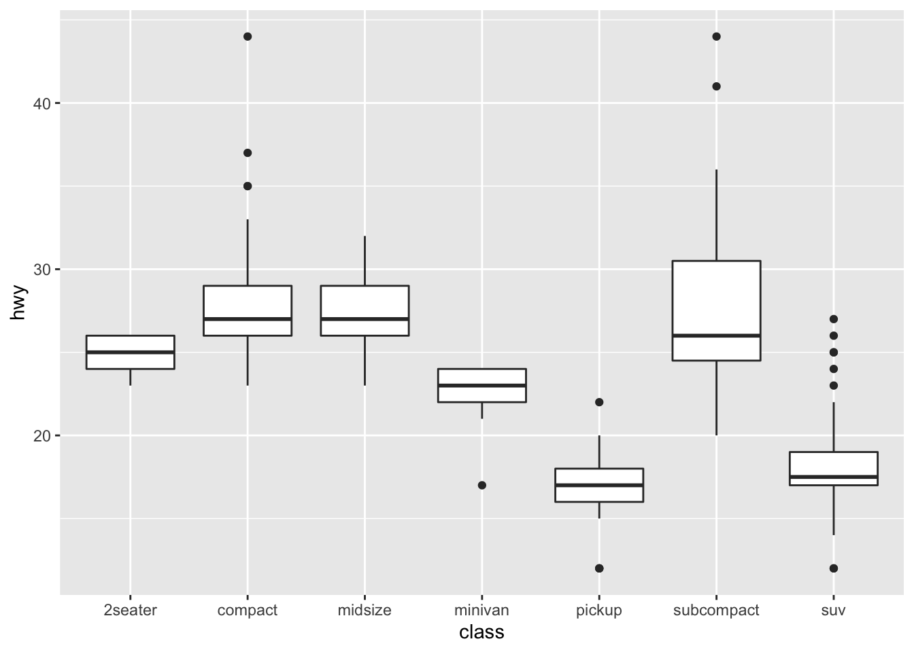
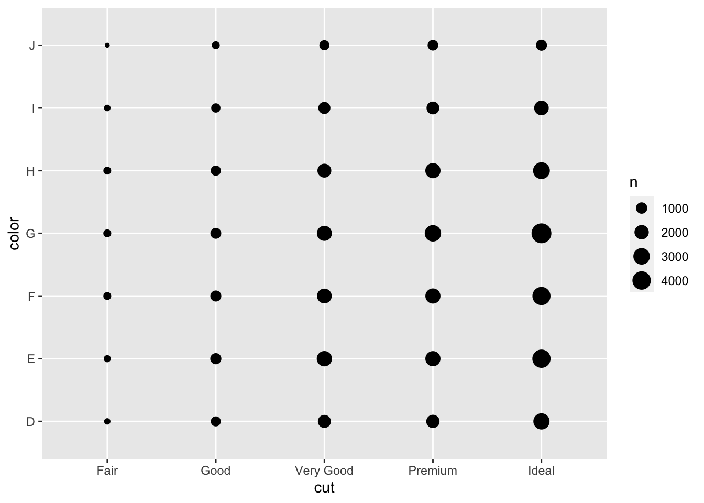
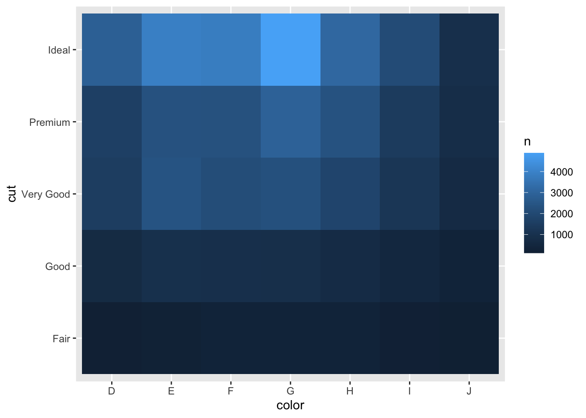

使用R tidyverse 进行探索性分析EDA
王诗翔 · 2018-04-24
该部分学习内容来自《R for Data Science》。
这次我们学习可视化与处理数据来系统地探索数据——统计学家称之为探索性数据分析（exploratory data analysis），简称为EDA。
EDA是一个迭代的圆圈：
- 生成关于你所拥有数据的问题
- 通过对数据可视化、转换和建模寻找答案
- 使用你学到的重定义你的问题或者生成新的问题
相比于严格的规则与流程，EDA更像一种思考状态。在EDA的初始阶段，你可以随意探索跳入你脑海的任意一个想法。
数据清理仅仅是EDA的一个应用，你询问是否你的数据如你所期。想要进行数据清理，你将需要使用EDA所有的工具：可视化、转换与建模。
准备
这部分我们将使用dplyr与ggplot2交互地对数据提问并回答，请确保在学习前安装好tidyverse包，可以顺利进行以下操作：
library(tidyverse)
#> ── Attaching packages ──────────────────────────────────────────────────────────── tidyverse 1.3.0 ──
#> ✓ ggplot2 3.3.2 ✓ purrr 0.3.4
#> ✓ tibble 3.0.3 ✓ dplyr 1.0.0
#> ✓ tidyr 1.1.0 ✓ stringr 1.4.0
#> ✓ readr 1.3.1 ✓ forcats 0.5.0
#> ── Conflicts ─────────────────────────────────────────────────────────────── tidyverse_conflicts() ──
#> x dplyr::filter() masks stats::filter()
#> x dplyr::lag() masks stats::lag()EDA的目标是理解数据，最容易实现的方式是用问题作为用具引导我们进行探索。想要提出有质量的问题首先必须提出大量问题。
提问的方式没有准则可言，但两类基本问题的提出会对我们理解数据大有裨益：
- 在我的变量中有什么类型的变异？
- 在我的变量之间有什么共同的变异？
在正式进行分析之前，允许我定义一些术语：
- 一个变量是一个你可以测量的数量、质量或者属性
- 一个值是当你测量一个变量时它的状态
- 一个观测或者一个案例是相似条件下一组测量值的集合。一次观测通常包含多个值，每个值与不同的变量相关联。我将有时称一个观测为一个数据点
- 表格数据是值的集合，每一个值都与一个变量和一个观测相关联
可视化分布
你如何可视化一个变量的分布取决于该变量是连续还是分类的。如果一个变量仅能取少量的几个值，我们就说它是分类变量。在R中，分类变量常保存为因子或者是字符向量。想要检查分类变量的分布，使用直方图：
ggplot(data = diamonds) +
geom_bar(mapping = aes(x = cut))
直方图的高度显示了每一个x值有多少个观测。你可以使用dplyr::count()手动进行计算：
diamonds %>%
count(cut)
#> # A tibble: 5 x 2
#> cut n
#> <ord> <int>
#> 1 Fair 1610
#> 2 Good 4906
#> 3 Very Good 12082
#> 4 Premium 13791
#> 5 Ideal 21551或者
diamonds %>%
group_by(cut) %>%
summarise(n = n())
#> `summarise()` ungrouping output (override with `.groups` argument)
#> # A tibble: 5 x 2
#> cut n
#> <ord> <int>
#> 1 Fair 1610
#> 2 Good 4906
#> 3 Very Good 12082
#> 4 Premium 13791
#> 5 Ideal 21551想要检查连续变量的分布，使用直方图：
ggplot(data = diamonds) +
geom_histogram(mapping = aes(x=carat), binwidth = 0.5)你也可以结合dplyr::count()与ggplot2::cut_width()手动计算这个：
diamonds %>%
count(cut_width(carat, 0.5))
#> # A tibble: 11 x 2
#> `cut_width(carat, 0.5)` n
#> <fct> <int>
#> 1 [-0.25,0.25] 785
#> 2 (0.25,0.75] 29498
#> 3 (0.75,1.25] 15977
#> 4 (1.25,1.75] 5313
#> 5 (1.75,2.25] 2002
#> 6 (2.25,2.75] 322
#> 7 (2.75,3.25] 32
#> 8 (3.25,3.75] 5
#> 9 (3.75,4.25] 4
#> 10 (4.25,4.75] 1
#> 11 (4.75,5.25] 1直方图将x轴划分为相等的宽度（由bin控制），然后使用每个条形的高度来代表落入该区域观测的数目。条形的宽度非常重要，不同的设定可能揭示出数据的内在分布模式。
smaller <- diamonds %>%
filter(carat < 3)
ggplot(data = smaller, mapping = aes(x = carat)) + geom_histogram(binwidth = 0.1)
如果你想要在同一幅图上画多个直方图，我推荐你使用geom_freqpoly()函数而不是geom_histogram()，它们的内部计算一致，但前者使用线形。
ggplot(data = smaller, mapping = aes(x = carat, color = cut)) +
geom_freqpoly(binwidth = 0.1)
典型值
在条形图和直方图中，高的条形显示了变量通常出现的值，而短的条形说明比较少见，而没有条形出现的地方说明变量几乎不可能会出现那个值。想要把这些信息转为有用的问题，寻找不同寻常之处：
- 哪个值最常出现？为什么?
- 哪个值很少出现？为什么？这符合你的预期吗?
- 你可以看到任何异常的模式吗?什么可以解释它？
作为一个示例，下面的直方图表明一些有趣的问题：
- 为什么在整个克拉和普通的克拉中有更多的钻石？
- 为什么每个峰顶右侧的钻石略多于每个峰顶左侧的钻石？
- 为什么没有钻石大于3克拉？
ggplot(data = smaller, mapping = aes(x = carat)) +
geom_histogram(binwidth = 0.01)
通常，有相似值的集群表明你数据中存在亚组（可以分组）。想要理解亚组，提问：
- 每个集群内的观察结果如何相似？
- 如何在不同的集群中观察到彼此不同的结果？
- 你如何解释或描述集群？
- 为什么集群的外观会产生误导？
下面的直方图显示了黄石国家公园老忠实喷泉272次喷发的长度（以分钟为单位）。喷发时间似乎分为两组：喷发时间短（约2分钟）和喷发时间长（4-5分钟），但间隔很少。
ggplot(data = faithful, mapping = aes(x = eruptions)) +
geom_histogram(binwidth = 0.25)上面的许多问题都会提示你探索变量之间的关系，例如，查看一个变量的值是否可以解释另一个变量的行为。 我们很快会做到。
不寻常的值
异常值是不寻常的观察结果; 数据点似乎不符合模式。有时异常值是数据输入错误;其他时间异常值表明重要的新科学发现。 当你有很多数据时，在直方图中有时很难看到异常值。例如，从钻石数据集中分配y变量。异常值的唯一证据是x轴上异常宽的限制。
ggplot(diamonds) +
geom_histogram(mapping = aes(x = y), binwidth = 0.5)
在常见的箱子有很多观察结果，罕见的箱子都很短，以至于看不到它们（尽管也许如果你专注于0，你会发现一些东西）。 为了便于查看异常值，我们需要使用coord_cartesian()缩放y轴的小值：
ggplot(diamonds) +
geom_histogram(mapping = aes(x = y), binwidth = 0.5) +
coord_cartesian(ylim = c(0, 50))（coord_cartesian()同样也有一个xlim参数当你在需要缩小x轴时可以使用。ggplot2也有xlim()与ylim()函数，但工作不太一样：它们会扔掉所有超过该限制的所有数据。）
这让我们可以看到存在3个异常值：一个是0，一个30左右，一个60左右。我们使用dplyr把它们取出：
unusual <- diamonds %>%
filter(y < 3 | y > 20) %>%
select(price, x, y, z) %>%
arrange(y)
unusual
#> # A tibble: 9 x 4
#> price x y z
#> <int> <dbl> <dbl> <dbl>
#> 1 5139 0 0 0
#> 2 6381 0 0 0
#> 3 12800 0 0 0
#> 4 15686 0 0 0
#> 5 18034 0 0 0
#> 6 2130 0 0 0
#> 7 2130 0 0 0
#> 8 2075 5.15 31.8 5.12
#> 9 12210 8.09 58.9 8.06y变量测量这些钻石的三个维度之一，单位为mm。 我们知道钻石不能有0mm的宽度，所以这些值肯定是不正确的。 我们也可能怀疑32毫米和59毫米的尺寸是不合理的：那些钻石长1英寸，但价格没有数十万美元！
无论是否存在异常值，重复进行分析都是很好的做法。如果他们对结果的影响最小，并且您无法弄清楚他们为什么会出现这种情况，那么将其替换为缺失值并继续前进是合理的。但是，如果它们对您的结果有重大影响，则没有理由不放弃它们。你需要弄清楚是什么导致了他们（例如数据输入错误），并且你在写作中应透露删除了它们。
练习
探索钻石中每个x，y和z变量的分布。你学到什么？想想钻石，以及哪个尺寸是长度，宽度和深度。
探索价格的分布。你发现什么不寻常或令人惊讶？（提示：仔细考虑binwidth，并确保您尝试各种值。）
0.99克拉多少颗钻石？ 1克拉多少钱？ 你认为什么是差异的原因？
在放大直方图时比较和对比
coord_cartesian()与xlim()或ylim()。 如果您保留binwidth未设置会发生什么？ 如果您尝试缩放以便只显示一半，会发生什么情况？
# 1
# x 分布
ggplot(data = diamonds) + geom_histogram(mapping = aes(x = x), binwidth = 0.5)ggplot(data = diamonds) + geom_histogram(mapping = aes(x = y), binwidth = 0.5)
ggplot(data = diamonds) + geom_histogram(mapping = aes(x = z), binwidth = 0.5)# 发现它们的分布模式其实非常接近
# 钻石长宽深有什么特点我不是很清楚，只能按常理x,y,z分别对应长宽深
# 2 探索价格分布
ggplot(data = diamonds) + geom_histogram(mapping = aes(x = price))
#> `stat_bin()` using `bins = 30`. Pick better value with `binwidth`.# 基本趋势是价格越高的数量越少，除了x轴5000前面有点反常
# 3
diamonds %>% filter(carat == 0.99) %>% count
#> # A tibble: 1 x 1
#> n
#> <int>
#> 1 23
diamonds %>% filter(carat == 0.99) %>% select(price, carat) %>%
ggplot(aes(x=price)) + geom_histogram()
#> `stat_bin()` using `bins = 30`. Pick better value with `binwidth`.
diamonds %>% filter(carat == 1) %>% select(price, carat) %>%
ggplot(aes(x=price)) + geom_histogram()
#> `stat_bin()` using `bins = 30`. Pick better value with `binwidth`.
# 4 我们以书中的例子做比较
ggplot(diamonds) +
geom_histogram(mapping = aes(x = y), binwidth = 0.5) +
coord_cartesian(ylim = c(0, 50))
ggplot(diamonds) +
geom_histogram(mapping = aes(x = y)) + ylim(0, 50)
#> `stat_bin()` using `bins = 30`. Pick better value with `binwidth`.
#> Warning: Removed 3 rows containing missing values (geom_bar).缺失值
如果你发现数据集中存在缺失值，想要简便地进行后续的分析，你有两个选项：
- 丢掉出现异常值的整行
diamonds2 <- diamonds %>%
filter(between(y, 3, 20))我并不推荐这样操作，因为一个测量值出现问题并不代表所有数据都有问题。另外，如果你的数据质量比较低，可能会删除绝大多数的数据，那你还分析什么呢？
- 相比于上述方法，我推荐用缺失值替换异常值。最简单的方式是使用
mutate()去创建一个修改的版本，你可以使用ifelse()函数将NA替换异常值。
diamonds2 <- diamonds %>%
mutate(y = ifelse(y < 3| y >20, NA, y))ifelse()函数有三个参数，第一个参数需要是逻辑向量，当test某个值为TRUE时，对应结果就是第二个参数，反之是第三个参数。
像R，ggplot2应用了缺失值从不该在沉默中缺失的哲学。当你绘图时很难发现缺失值，所以ggplot2会提醒你那么被移除了。
ggplot(data = diamonds2, mapping = aes(x=x, y=y))+
geom_point()
#> Warning: Removed 9 rows containing missing values (geom_point).想要抑制警告，设置na.rm=TRUE：
ggplot(data = diamonds2, mapping = aes(x=x, y=y)) +
geom_point(na.rm = TRUE)
有时候你会想什么让观测缺失了数值，它与有记录的值又有什么不同。例如，在nycflights13::flights数据集中，dep_time变量的缺失值（参加使用dplyr数据处理一文）显示了航班被取消了。所以你想比较安排起飞取消和没取消的次数：
nycflights13::flights %>%
mutate(
cancelled = is.na(dep_time),
sched_hour = sched_dep_time %/% 100,
sched_min = sched_dep_time %% 100,
sched_dep_time = sched_hour + sched_min /60
) %>%
ggplot(mapping = aes(sched_dep_time)) +
geom_freqpoly(mapping = aes(color = cancelled), binwidth = 1/4)共变化
如果变化描述变量内的行为，则共变化描述变量之间的行为。 共变是两个或更多变量的值以相关方式一起变化的趋势。 发现共变化的最好方法是可视化两个或更多变量之间的关系。 你怎么做，应该再次取决于所涉及的变量的类型。
一个分类变量和连续变量
如前一个频率多边形一样，想要探索由分类变量细分的连续变量的分布是很常见的。geom_freqpoly()的默认外观对于那种比较没有用处，因为高度由count给出。这意味着如果其中一个组别比其他组别小得多，很难看出形状上的差异。 例如，让我们来探讨钻石的价格如何随其质量而变化：
ggplot(data = diamonds, mapping = aes(x = price)) +
geom_freqpoly(mapping = aes(color=cut), binwidth = 500)It’s hard to see the difference in distribution because the overall counts differ so much:
ggplot(diamonds) +
geom_bar(mapping = aes(x = cut))
为了使比较更容易，我们需要交换y轴上显示的内容。 我们不显示计数，而是显示密度，这是标准化的计数，以便每个频率多边形下的面积为1。
ggplot(data = diamonds, mapping = aes(x = price,
y = ..density..)) + geom_freqpoly(mapping = aes(color = cut), binwidth = 500)这个结果有一些令人惊讶的地方 -看起来，一般的钻石（最低的质量）的平均价格最高！ 但也许这是因为频率多边形有点难以解释 - 在这个结果中有很多事情要做。
显示分类变量细分的连续变量分布的另一种方法是boxplot。 boxplot是一种在统计学家中很受欢迎的价值分布的视觉缩写。 每个boxplot包括：
一个从分布的第25个百分点延伸到第75个百分点的盒子，这个距离被称为四分位间距（IQR）。在框的中间是显示分布的中值（即第50百分位）的线。这三条线让你了解分布的扩散以及分布是否对称于中值或偏向一侧。
显示观察结果的如果点从盒子的任一边缘落入IQR的1.5倍以上。 这些偏离点是不寻常的，因此单独绘制。
从盒子两端延伸出来的线（或胡须）分配到最远的非异常点。

让我们使用geom_boxplot()来看一下价格的分布：
ggplot(data = diamonds, mapping = aes(x=cut, y=price)) +
geom_boxplot()我们看到关于分布的信息要少得多，但箱形图更加紧凑，因此我们可以更轻松地比较它们（并且更适合于一个图）。 它支持反直觉的发现，即更好质量的钻石平均价格更便宜！
许多分类变量没有这样的内在顺序，因此您可能需要对它们重新排序以提供更丰富的信息。一种方法是使用reorder()函数。
例如，使用mpg数据集中的class变量。您可能有兴趣了解不同类别汽车的公路里程如何变化：
ggplot(data = mpg, mapping = aes(x=class, y=hwy)) +
geom_boxplot()
想要使趋势更清楚，我们可以使用hwy的中位数进行排序：
ggplot(data = mpg) +
geom_boxplot(mapping = aes(x = reorder(class, hwy, FUN = median), y=hwy))如果你由一个长的变量名，你反转90度显示的效果更佳：
ggplot(data = mpg) +
geom_boxplot(mapping = aes(x = reorder(class, hwy, FUN=median), y=hwy)) + coord_flip()两个分类变量
想要可视化两个分类变量的共变化，你需要对每一种组合进行计数。一种方法是依赖内置的geom_count()：
ggplot(data = diamonds) +
geom_count(mapping = aes(x=cut, y=color))
图中每个圆圈的大小显示每个值组合处发生的观察次数。 共变将表现为具体x值与具体y值之间的强相关性。
另外一种方法是使用dplyr计算计数：
diamonds %>%
count(color, cut)
#> # A tibble: 35 x 3
#> color cut n
#> <ord> <ord> <int>
#> 1 D Fair 163
#> 2 D Good 662
#> 3 D Very Good 1513
#> 4 D Premium 1603
#> 5 D Ideal 2834
#> 6 E Fair 224
#> 7 E Good 933
#> 8 E Very Good 2400
#> 9 E Premium 2337
#> 10 E Ideal 3903
#> # … with 25 more rows使用geom_tile()和fill映射可视化：
diamonds %>%
count(color, cut) %>%
ggplot(mapping = aes(x=color, y=cut)) +
geom_tile(mapping = aes(fill = n))
如果分类变量无序，则可能需要使用seriation包同时对行和列进行重新排序，以便更清楚地显示有趣的模式。 对于较大的地块，你可能需要尝试使用d3heatmap或heatmaply创建交互式地的图形。